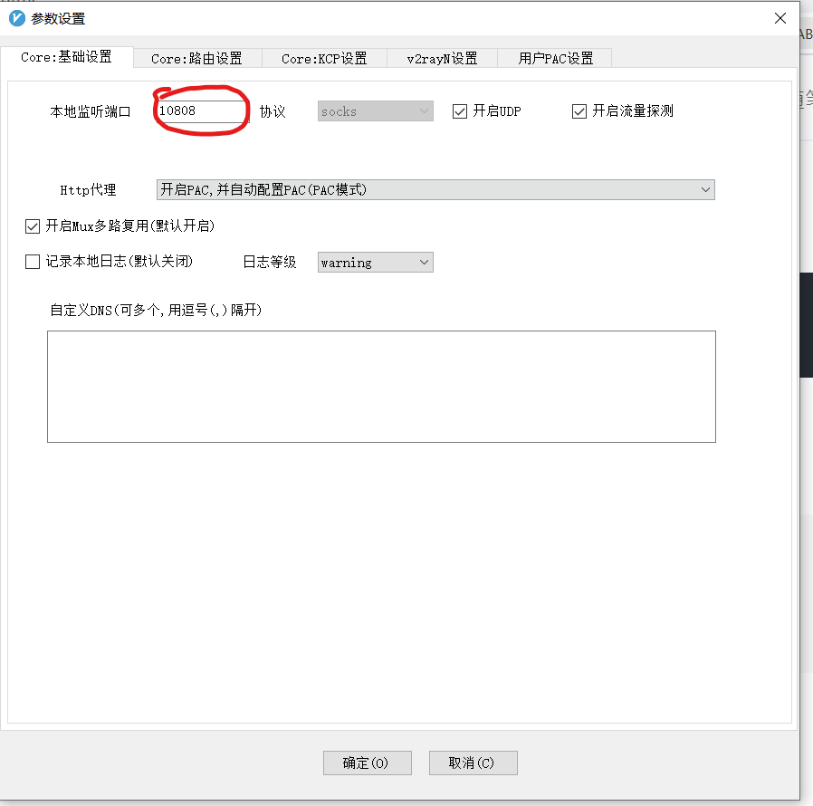
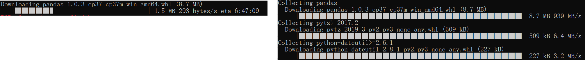
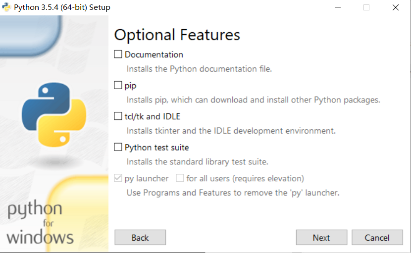
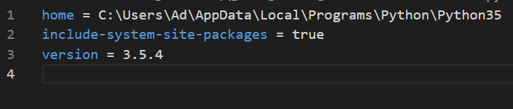
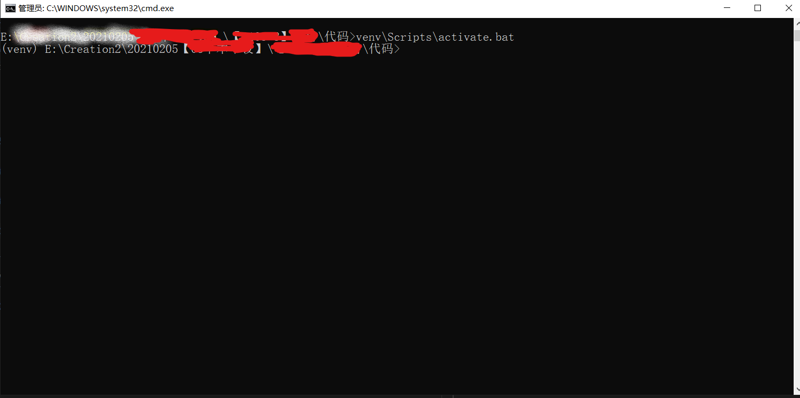

Python Tips¶
01pip更改镜像源¶
由于默认安装时的源大都是外国的更新源，速度相对国内会慢很多，接下来本文主要介绍在windows和linux两种系统环境中更新系统源的方法。
一、在windows环境下修改pip镜像源的方法(以python3.5为例)¶
(1):在windows文件管理器中,输入 %APPDATA%
(2):会定位到一个新的目录下，在该目录下新建pip文件夹，然后到pip文件夹里面去新建个pip.ini文件
(3):在新建的pip.ini文件中输入以下内容(华为云的镜像源)，搞定
1 2 3 4 | [global] index-url = https://repo.huaweicloud.com/repository/pypi/simple trusted-host = repo.huaweicloud.com timeout = 120 |
02Python2.7 GUI打不开问题的解决¶
问题¶
- 安装了Python2.7之后再开始菜单打开GUI时，没有反应
解决方案¶
Win+R,输入:
1 | %USERPROFILE%\.idlerc
|
删除里面所有的文件，再次打开发现可以运行GUI了
03使用pyinstaller将python文件编译为exe¶
第一步:安装pyinstaller¶
1 | pip install pyinstaller |
第二步：转换¶
cd到py文件的目录下，cmd中输入
1 | pyinstaller -F *.py |
REFENRENCE¶
https://www.py.cn/jishu/jichu/12700.html
04pip下载加速——socks5代理¶
问题¶
使用pip时总是因为那不到100k/s的速度所劝退。想到更换镜像源，但有时总是找不到部分镜像。于是想到了网络代理，但是如果用的梯子只支持socks5而不支持http/https代理就不能够解决问题，
- 方法就是：为Python pip设置socks5代理
工具¶
- socks5网络代理服务（在本地已经连接好）
- python pip
方法¶
第一步：给pip安装socks5代理支持依赖¶
打开命令行后，输入
1 | pip install pysocks |
第二步：找到自己梯子的代理端口¶
比如我的V2Ray软件中是10808,
ps:我并不清楚为什么这里的协议不能修改，可以修改为http/https的话就不用第一步,而直接用http/https代理了。

在文本编辑器里写成如下形式一会儿复制到命令行中：
1 | socks5://127.0.0.1:10808 |
第三步：打开命令行并开始pip安装¶
Win+R后输入cmd或者从开始菜单打开命令行窗口之后，输入以下命令。（这里以安装pandas库为例）
1 | pip install pandas --proxy='socks5://127.0.0.1:10808' |
效果是很显著的，速度从原来的1kb级别提升到了几Mb：（左为前，右为代理后）

注：如果出现warning无法连接，可以试着打开梯子的全局代理模式¶
REFERENCE 参考文献¶
https://www.cnblogs.com/qq952693358/p/10250672.html
05python环境移植¶
本文展示了如何将虚拟环境移植到另一台电脑上，
实验环境：两台电脑分别为 * win10-x64 * win7 -x64
其他暂未实验，看来均为x64一般可以移植成功，与Linux之间的移植不能用这个方法。
说在前面¶
虚拟环境分许多种类，这里用的是 virtualenv 产生的环境，使用pycharm创建的。跟着下列步骤可以方便地进行移植。
步骤¶
- 双击安装包，这取决于python版本
- 不点击install now，点击custom installation，可以取消勾选所有勾。

- 记住刚才安装的路径（默认是
C:\Users\Ad\AppData\Local\Programs\Python\Python35） - 打开并编辑代码中的venv文件夹中的
pyvenv.cfg，将路径替换，保存并退出

- 安装完毕，下面分使用命令行与pycharm
使用Windows命令行（占用额外资源少）¶
- 打开命令行，cd到venv上一级目录，执行
1 | venv\Scripts\activate.bat |

- 执行后可以看到前面的(venv)提示，表示已经激活了venv，要退出激活，执行该目录下的
deactivate.bat即可（实践证明不激活也能进行下一步，进行使用） - 此时在
.py代码目录下可以执行：
1 | venv\Scripts\python.exe main.py |
使用pycharm（新手推荐）¶
- 在代码路径下右键，以此文件夹为项目打开pycharm
- 留坑，略